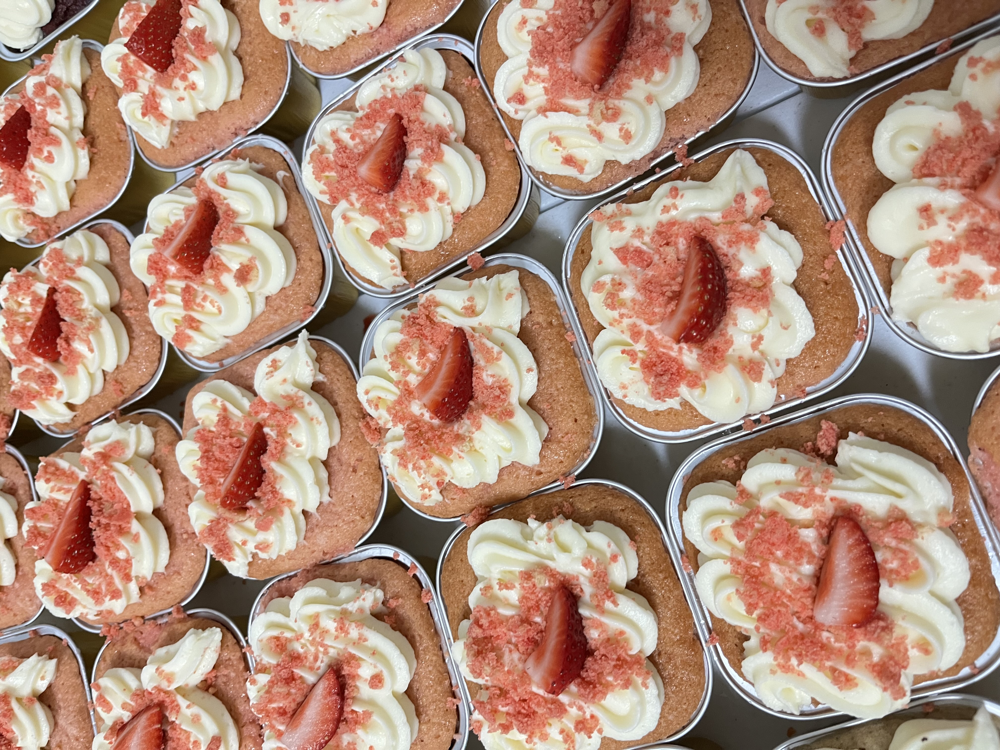
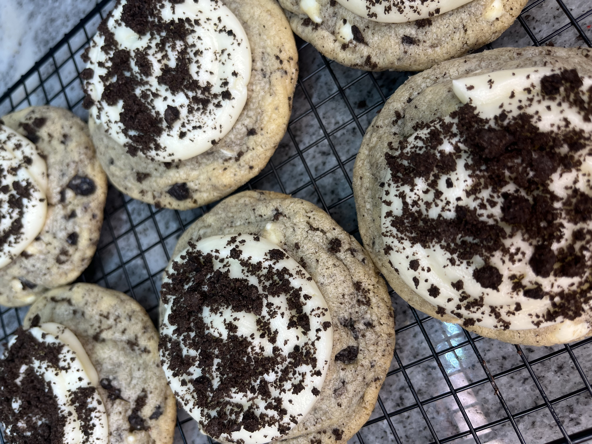

Customer Favorites

Strawberry Crunch Cake
Moist strawberry cake topped with cream cheese frosting, fresh strawberries, and strawberry crunch crumbles.

Banana Pudding
Layers of creamy banana pudding, vanilla wafers, and sweet toppings made with love.

Cookies & Cream Cookie
Our signature vanilla cookie loaded with Oreo pieces and white chocolate.